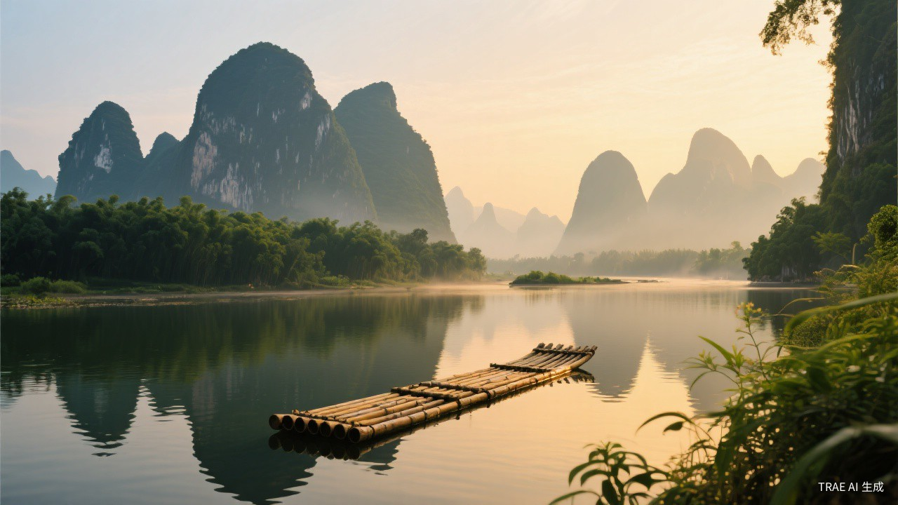
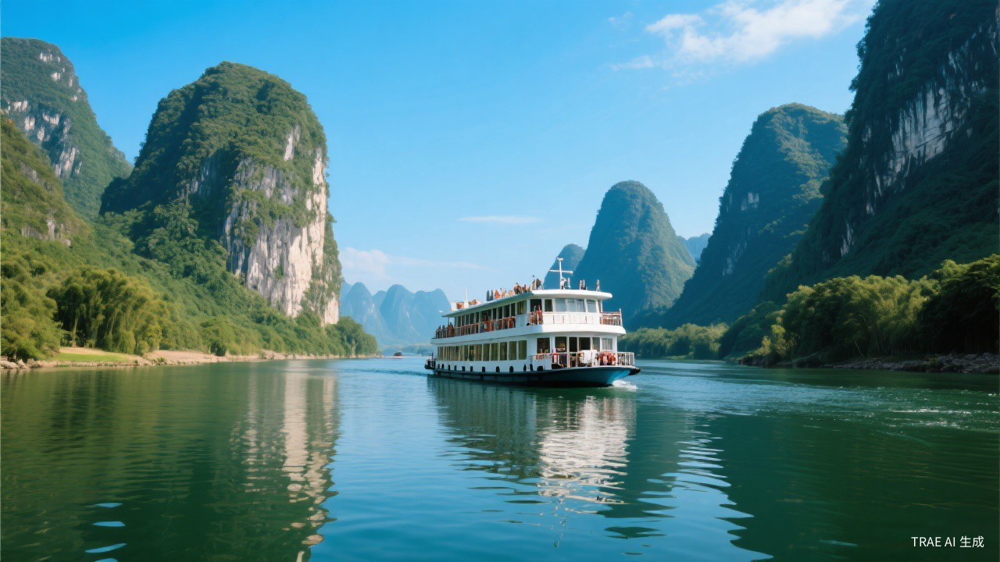

Embark on an unforgettable journey through China's most breathtaking karst landscapes. From the iconic Li River to the charming streets of Yangshuo — we craft the perfect adventure for you.
Happy Travelers
Tour Packages
Average Rating
From classic river cruises to off-the-beaten-path adventures — find the perfect Guilin experience for your travel style and budget.

Best Seller Full DayGlide through the stunning karst landscape from Guilin to Yangshuo aboard a comfortable cruise ship. See the scenery featured on the 20 RMB banknote.
Explore Yangshuo's stunning countryside by bike and bamboo raft. Visit ancient villages, rice terraces, and enjoy the famous Impression Sanjie Liu light show.
Taste your way through Guilin's vibrant food scene. From the legendary Guilin Rice Noodles to Beer Fish and local street snacks — a feast for all senses.
We go above and beyond to make your Guilin trip seamless, authentic, and unforgettable.
English-speaking certified guides who know every hidden gem and secret viewpoint.
Competitive pricing with no hidden fees. We match any comparable tour price.
Plans change — we get it. Cancel up to 48 hours before for a full refund.
Round-the-clock assistance via WhatsApp, email, or phone throughout your trip.
Real stories from real travelers who explored Guilin with us.
"The Li River cruise was absolutely breathtaking. Our guide was knowledgeable and fun. This was the highlight of our entire China trip!"
"Guilin Gateway made everything effortless. From airport pickup to the Yangshuo cycling tour — every detail was perfectly arranged."
"The food tour was incredible! We tried dishes we'd never find on our own. The local market visit was a truly authentic experience."
Get a free personalized itinerary tailored to your interests, budget, and travel dates. No obligations — just pure travel inspiration.
Fill out the form below and our travel experts will get back to you within 24 hours with a personalized proposal.
Whether you're traveling solo, as a couple, with family, or in a group — we'll design the perfect Guilin experience for you.
info@guilingateway.com
+86 138-0000-0000
Mon–Sat: 9:00 AM – 9:00 PM (GMT+8)
Zhongshan Road, Guilin, Guangxi, China